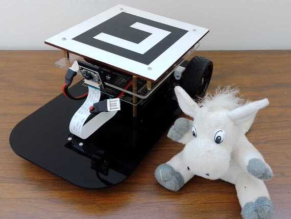

DonkieTown is a mobile robotics platform designed to be affordable and scalable. The idea was to have a testbed with multiple inteligent cars driving at the same time while communicating their driving intentions and state variables as Inteligent Connected Vehicles alike. It still is my most complex project so far. It was developed over ROS using python and C++. For the deployment, I developed bash scripts. It's driving software is powered by Extended Kalman Filters, classic control, FSMs, and Deep Learning. All running on an onboard Jeston Nano 😸.
I almost forgot to mention, I designed and built each robot, a tracking system and a Vehicle-to-Vehicle implementation of an international specification.
For more details, go to DonkieTown's repo. For technical details read the IEEE paper. Video demos are available at my robotics youtube channel.
Politécnicos Pro Alzheimer was a smart mat originally made to track my grandmother. She has Alzheimer and at that time she used to get lost. In High School, my classmates and I, created PPA, we won the Samsung Solve For Tomorrow contest and won an invitation to the Cosumer Electronics Show 2018 and a grant to develop our prototype. I started college networking with private health care institutions and Startup accelerators.
I was 18-20 years old when I received most of the responsabilities, and since I was also new in Mexico City and enrolled to a time demanding degree, PPA couldn't succeed.
πstache is a Single-Issue In-Order pipelined core based on the RV32I ISA subset. I started developing it for my first computer architecture class and it is composed of 5 different pipelined stages, a forwarding unit and a hazard unit. Unfortunately there's no branch predictor inside it, therefore, compilers must add No Operations to make it useful. However, my intentions are to finish this core architecture in order to be custom-made for my needs on Digital Signal Processing within my FPGAs.
πstache was developed alongside Quartus Prime. It was intended to be loaded into a Cyclone IV E EP4CE115F29C7 FPGA. Unfortunately, because of the pandemic, I've only tested it in a RTL simulation by means of ModelSim Altera. The analysis and synthesis ensure the use of 1,076 total logic elements and a maximum clock frequency of 71.89 MHz is warranted by the timing analysis with a slow 1200mV 85C Model.
TODO
TODO
Contact me for inquiries and collaborations:
ealarralde@gmail.com